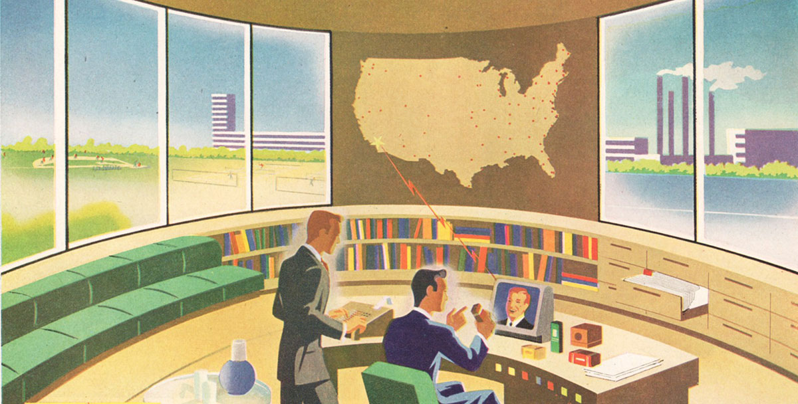

Tomorrow's Technology, Yesterdays Insights
Sometimes what the tech world comes up with has already been tried and rejected and really doesn't need to be resurrected like the Taylorist view...
TECHNOLOGYUseful Links
About
Jobs
Team
Advertise
Terms